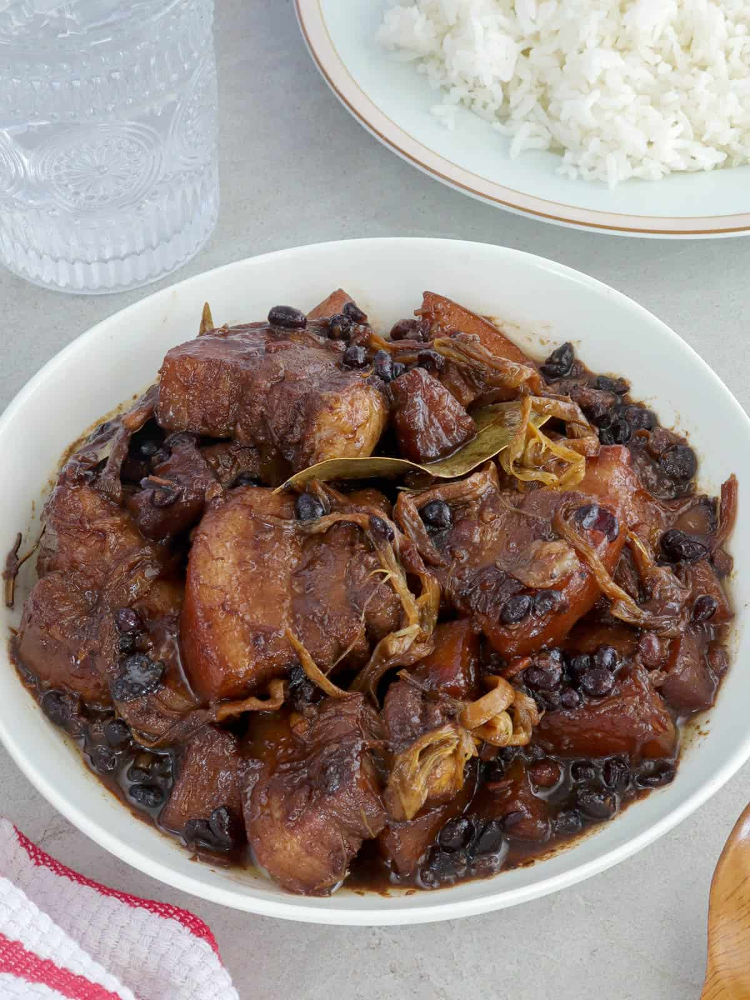

Pork Humba

Description
Pork Humba is a famous Visayan braised pork dish, similar to adobo but noticeably sweeter and richer.
It typically features melt-in-your-mouth pork belly slow-cooked with soy sauce, vinegar, garlic, bay leaves,
fermented black beans (tausi), banana blossoms, and brown sugar or pineapple juice for a perfectly sweet-savory flavor.
Ingredients
- Bananas
- Star Anis
- Pineapple Juice
- Soy Sauce
- Vinegar
- Water
- Pork Belly
Steps
- Heat the cooking pot then brown the pork belly
- Add the onions and garlic and cook until the onions are soft
- Put-in the soy sauce, peppercorn, bay leaves
- Pour-in the pineapple juice and let boil. Simmer until the pork is tender (add water as needed)
- Add the vinegar and wait for the mixture to re-boil. Simmer for 3 minutes
- Spoon-in the salted black beans and brown sugar then simmer for 5 minutes
- Add the dried banana blossoms and simmer for 5 to 8 minutes
- Transfer to a serving plate and serve. Share and enjoy!
Home